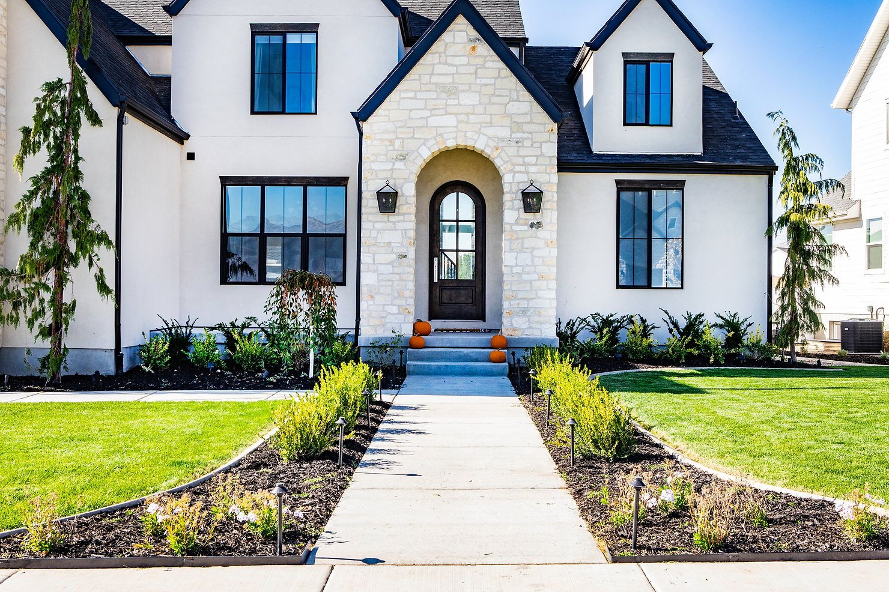
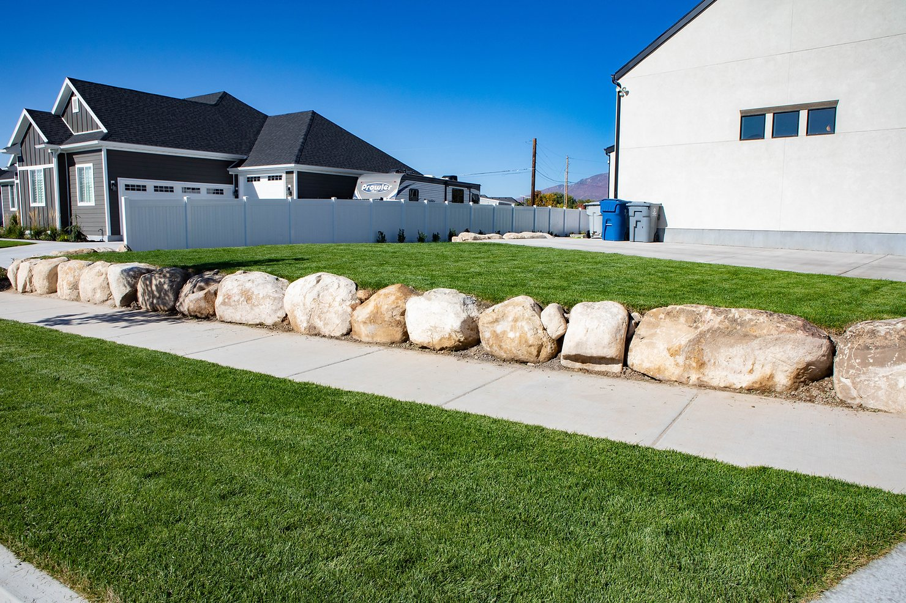
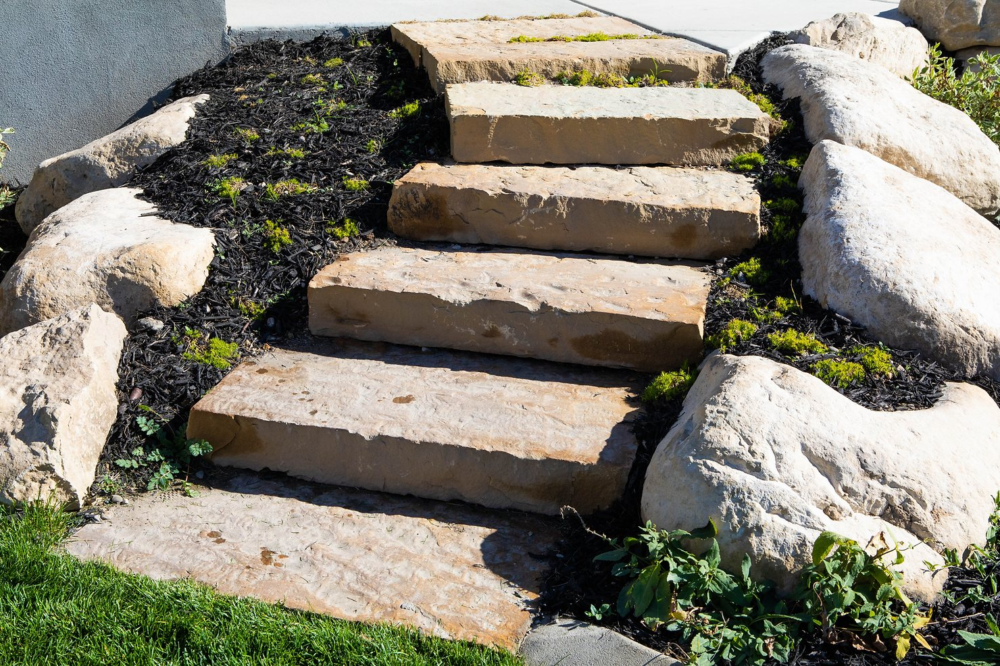
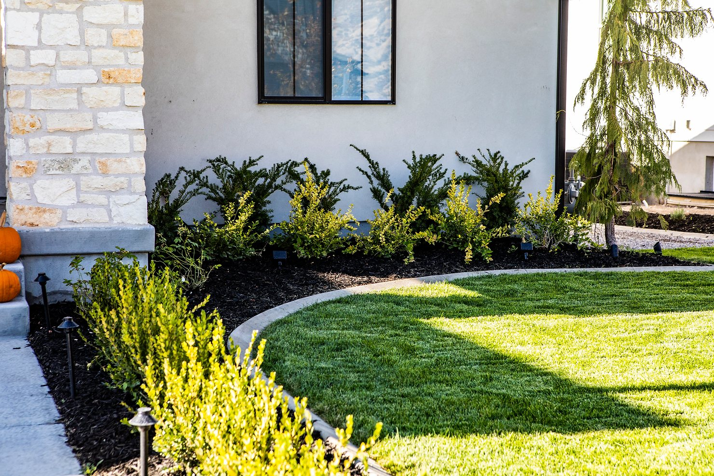

European Modern Transformation
Updated: Oct 21
Customized Touches
Attention to detail is our forte, and this project was no exception. We integrated personalized touches, such as strategically placed flower beds with European-inspired flora, enhancing the overall theme. The result is not just a backyard but a curated outdoor experience that transports our clients to the heart of European elegance. Check out our Before and After Transformation Reveal pictures below!
While the aesthetics capture attention, functionality remains paramount. Every aspect of the landscape is designed with the family in mind. Whether it’s a game of tag on the grass, storytelling by the fire pit, or hosting friends for a delightful evening, this landscape seamlessly accommodates every aspect of the clients’ lifestyle.




STYLE
FEATURE
BUDGET
TYPE
LOCATION
Recent Posts

If you live in Lehi, there's a good chance your yard isn't perfectly flat. Newer neighborhoods near Traverse Mountain, homes along the foothills, and lots that step down toward the street all share th